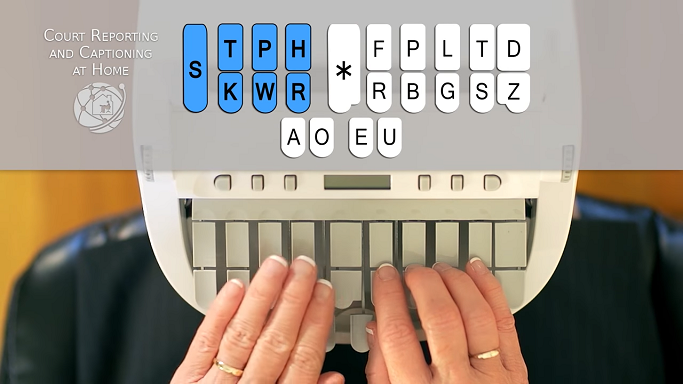
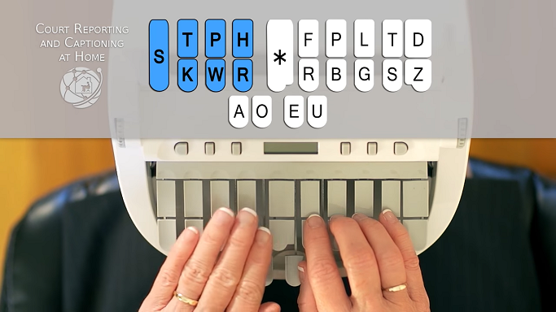

Elements Important to know while writing Unity Code
Code details for code generation
From Andraelity, a relation with Me and WORDS
This is an article capable to sustain, the kind of elements we need to set in order to promote the construction of more details around the generation of words.

CONSTRUCTION OF WORDS one of the primary components we need to solve in this structure of the world is the ability of the people to communicate characteristics about reality, this reality is based as a conjuction of elements with logic and reasoning as its main driver, if you want to share a meaning or a idea with someone else you are forced to enable the construction of paths with language as its core ingredient, language as its primary subject, language as the unique model the human mind can access to fullfil its desire to obtain an objective, with this structure in mind, we realize our only option to subdue at its magnificent, by setting and approaching this kind of behavior as our pivot point of returning, enable us to keep iterating around this perpetual and limitless structure of reality. Setting the production of a positive and evolutive communication as the most important element in the person who is obligated to respond/answer to the objects where he is curretly inmerse.
Important article on the elements required to know regarding code generation UNITY
http://man.hubwiz.com/docset/Unity_3D.docset/Contents/Resources/Documents/docs.unity3d.com/Manual/
The contents of this website could allow you to modify the code in the way necessary to produce the elements required for shader comprehension.

Technology needed to produce the context where the vision can be sintetized.


What is the inside meaning of this quality, what is the inside value of this representation, learning how to generate more components, learning how to activate the inner visions of the mind, the inner structure of the man who's thinking, the man who is employing the ability to write and set qualities in motion, the man who is forming and behaving, by the actions he is constantly using as a mottor of network communication.

We need to work in this area of developement for the simple reason to obtain a component capable to maximize how the ideas are created, how the powers are generated, what elements can be used in the production of more perceptions of more qualities, of more visions, a movement of the psyche to another area of understanding, and while you are interacting with this particular area of developement enhance the effience of your own definition of quality, of your own definition of idea, of your own definition of improvement, something that only can be achieved when you focus your mind in the personalization around cretion and modelation, of this clear perceptual movement of the psyche, a expression loaded with the components i believe this actual movement and time of our reality really want to experience, a new way to interact with the machines in a meaningful set of communications.

By understanding the model and how the perceptual expressions are setted we perceive that the change can be generated if we put in action the values and the ideas started when we use this technology that hasn't been transformed or upgraded radicaly in the past 20 years.


Its a matter of necessity we all need this expression, we all need how to obtain this rule, this unique quality, this particular interaction with the world, modify the whole market of games, the whole market of programmers, of secretaries, the whole market of education, and improve the quality in production efficiency, only by never distance ourself from the behaviors we cant espace from. the unavoidable necessity of the cultivator who is always seeking and appraoching the developement of its own self, something can only happend when is interacting with a computer in order to analyze values, tables and comparative analysis in the different areas of work, the men put his mind into.

Everything with the purpose to obtain new visions of the world, new purposes capable to transform the ideas i can achieve, using this really valuable subject of the mind in order to produce more characteristics, learning how to enable the creation of fields, learning what actions we can set when we learn that we are able to produce qualities and process, learning what ideas i can stablish each time i design the properties i want to sintetize, the models i want to generate, the creations i want to share, with the world, learning how to produce more interactions with the world, a meaningful description of the subjects created around the unity of properties, the characterisation of details, achieve new combinatory properties, and while this expression is being achieved, transform the qualities into something more powerful, into something more complete a reality based completely in mind developement, in mind description.

Learn how to represent more perceptions, learn how to manipule the present structure of the language as something you can practice by repetition of ideas. Learning how to interact with the matter in order to provide more representations, learning how to produce tunes loaded with mind intelligence genaration, a component based with the primary structure of developement of the ideas.
Why Mechanical keyboards


Thanks to the properties mechanical keyboards provide, like its easiness and enjoyment of typing experience, and its exponential continual use in dayly activities provide us with a motion to implement in this structure we want to represent, this structure we want to enable, the capability to provide more structures in the current motion we are trying to provide, we are trying to express, the capability to set more functions and visions by its veriable and user experience of smooth keypressing actions a mechanical keyboard provide, enhancing by this vision the production of more components, the production of more data, the production of more actions and behaviors to present in the current field we want to improve.
TYPING EXPERIENCE OVER 170 WORDS PER MINUTE (WPM)
https://www.youtube.com/watch?v=oxN1C2QQUIE&ab_channel=DrTypewriter
https://www.youtube.com/watch?v=imtiA8v06Yg&ab_channel=mypanupat
https://www.youtube.com/watch?v=aGIn_TXk-KY&ab_channel=NoThisIsJohn
https://www.youtube.com/watch?v=-tpsAj29Hy4&ab_channel=slekap
https://www.youtube.com/watch?v=8Ixtfo3I4VE&ab_channel=StenoKeyboards
https://www.youtube.com/watch?v=kOu7yY7qiik&ab_channel=WilliamKuwata
https://www.youtube.com/watch?v=WLu6yg3Jf0k&ab_channel=DanielChen
https://www.youtube.com/watch?v=A_Z3CmBQlHg&ab_channel=PierreM
https://www.youtube.com/watch?v=i24xrmkbX4g&ab_channel=joshu
https://www.youtube.com/watch?v=80_3-BHmuIQ&ab_channel=LMStrength
https://www.youtube.com/watch?v=FdkQ94mEsPo&ab_channel=Noba-osu%21
https://www.youtube.com/watch?v=4NjleF5c9wc&ab_channel=chakk
https://www.youtube.com/watch?v=A0IM-2zdNhY&ab_channel=shrekt
https://www.youtube.com/watch?v=a2hVHbqLUaU&ab_channel=Yada
The necessity for multi screen


Si ordenamos las propiedades de tal forma que se activen los contenidos antes mencionados lograremos que los individuos generen una actividad practica centrada en la modulacion y vision y exponenciacion de misterios centrados en la creacion de cultura, en la creacion de propiedades sistemicas, con el unico proposito de la maximizacion del contenido en produccion, con el unico objetivo de lograr generar una respuesta analitica sobre el lenguage que se conoce por experiencia propia se puede lograr, se puede comunicar y expresar, es una combinacion de pantallas en miras de la produccion de mas propositos, unir los elementos de trabajo en busqueda de una idea a alcanzar, una idea a producir, una idea a orientar, una idea necesaria para ubicar las sensaciones de los involucrados siempre hacia la determinacion de sus entendimientos. Ya que las pantallas promueven la construccion de mas entidades de software de caracter gamificante, entidades de software de carater practico, generando con ello nuevas rutas interactivas, generando con ello nuevas rutas practicas sobre el modelo, generando propiedades las cuales mejorar a medida que centramos la edificacion de coherencias sobre la estructura que se desea aplicar, mejorando como las relaciones de poder se producen al momento de enfrentar las partes hacia si mismas, como las relaciones interactivas de los movimientos de los sujetos entran a participar en la definicion de procesos, ser capaces de jugar a crear y crear todo lo que nos sea permitido, creando y formulando, pensando y detallando, activando y concentrando todas las mociones en torno a la edificacion de los procesos de entendimiento.
Stenographer synonym of someone who knows how to type really really fast
There is this machine, court reporters use in trials when they want to take note of each single word the parties are communicating, how the words in this conversations between the judge and the litiganst, this machine allow the person in use of it, to write pages at least at 200 words per minute and you coudl think that this machine works similarly as a keyboard but you're wrong if you think that it behaves the same, cuz the stenegraph works as a combination of keys that allow the user to write a word without needing to press all the characters that build and construct it, the behavior it enable is a way to tell a computer to remember a previously setted word by the stenographer in order to type it faster, some example of this behaviour could be something like:


 



Games and typing
If i want to create this idea, if i want to materilize the continual thinking i am approaching each time i set my mind in action, i can acquire a piece of totality, i can obtain a piece of expression, i can generate a movement of personality, a movement of qualities described as part of the whole expression, as a piece of the entirety movement, the entirety expression of this field of work, an enviroment setted as a conjunction of elements an enviroment setted as a reunion of qualities, an enviroment described only by the well designed parts of this current feeling, of this current transformation of the world, of how the meanings can be united into a meaningful and valuable production of combinations.